R Package Tutorial
SingRegKrig: A Complete R Tutorial for Singularity Regression Kriging
From data preparation and model fitting to spatial cross-validation, uncertainty mapping, and reproducible prediction.
https://CRAN.R-project.org/package=SingRegKrig
Developers Shikhar Tyagi, Arvind Pandey, Bhupendra Singh, and Vrijesh Tripathi
Maintainer Shikhar Tyagi
Open CRAN
What this tutorial covers
From heterogeneous covariates to a validated spatial prediction
Environmental relationships are often nonlinear, non-stationary, and affected by local anomalies. Singularity Regression Kriging (SRK) addresses this setting by combining multi-scale singularity features, a random-forest trend, and ordinary kriging of the remaining residuals.
Before you begin
Package, files, and source material
The worked example is self-contained: sim_srk_data() generates the tutorial data in R, so
no external input file is required. When adapting the workflow to a real study, prepare one sample file
and one prediction-grid file with matching coordinate and covariate fields.
This tutorial follows version 0.1.0 and uses the supplied cover, package logo, and twelve reproducible result figures.
Ren, K., Song, Y.*, Chen, M., & Yu, Q. (2026). “A singularity regression kriging for spatial prediction.” GIScience & Remote Sensing, 63(1), 2690341.
Set up R
Install the package and fix the random seed
Install the package once, then load the two libraries used throughout this walkthrough.
install.packages("SingRegKrig")
library(SingRegKrig)
library(ggplot2)
set.seed(42)
packageVersion("SingRegKrig")
# [1] '0.1.0'Record the R version, package version, and random seed in every formal analysis.
Prepare the data
Build and inspect a skewed spatial dataset
An SRK analysis needs four types of information.
| Field type | Example | Purpose |
|---|---|---|
| Response | z | Observed target at sampled locations |
| Coordinates | x, y | Projected coordinates, normally in metres |
| Covariates | cov1, elevation, slope | Required at samples and prediction locations |
| Prediction locations | Matching coordinates and covariates | No response field is required |
tutorial_data <- sim_srk_data(
n_side = 20,
scenario = "skewed",
seed = 42
)
dim(tutorial_data)
# [1] 400 4
head(tutorial_data, 8)
summary(tutorial_data)
The result contains 400 locations and four fields: x and y are coordinates,
z is the response, and cov1 is the environmental covariate. There are no missing
or non-finite values.
Do not mix longitude and latitude in degrees with analysis scales in metres. If the singularity scales are 2,000–20,000 m, use a projected coordinate system measured in metres.
Explore first
Check spatial patterns, skewness, and covariate relationships
Before fitting a model, inspect the response and covariate maps, the response distribution, and the shape of the covariate–response relationship.
spatial_long <- rbind(
data.frame(x = tutorial_data$x, y = tutorial_data$y,
variable = "Response z", value = tutorial_data$z),
data.frame(x = tutorial_data$x, y = tutorial_data$y,
variable = "Covariate cov1", value = tutorial_data$cov1)
)
ggplot(spatial_long, aes(x, y, fill = value)) +
geom_raster() +
coord_equal() +
facet_wrap(~variable) +
scale_fill_viridis_c() +
theme(panel.grid = element_blank())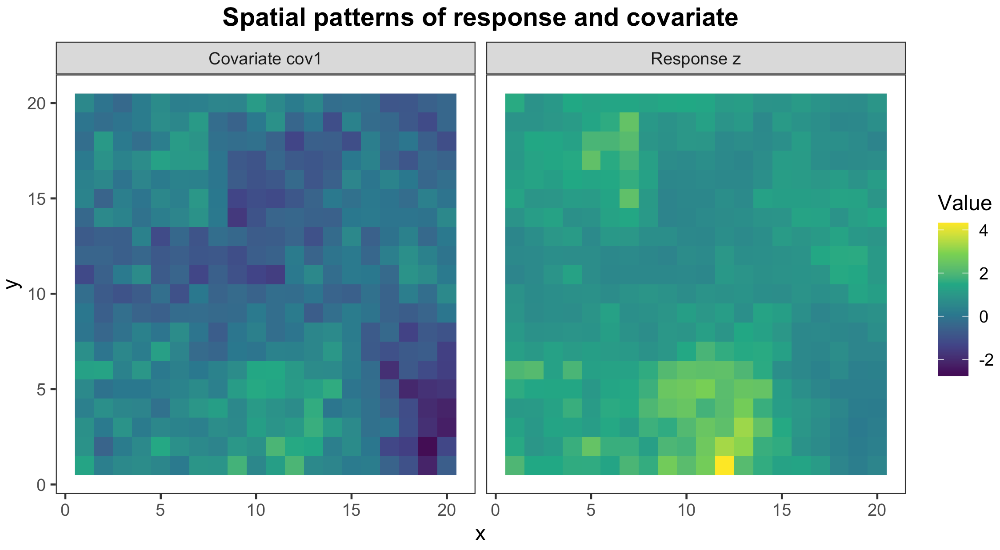
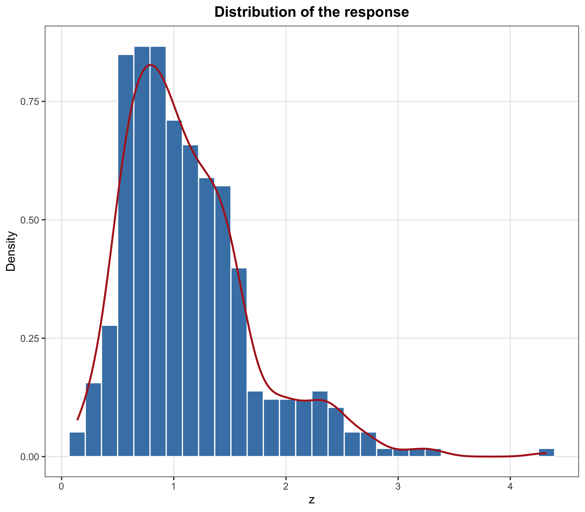
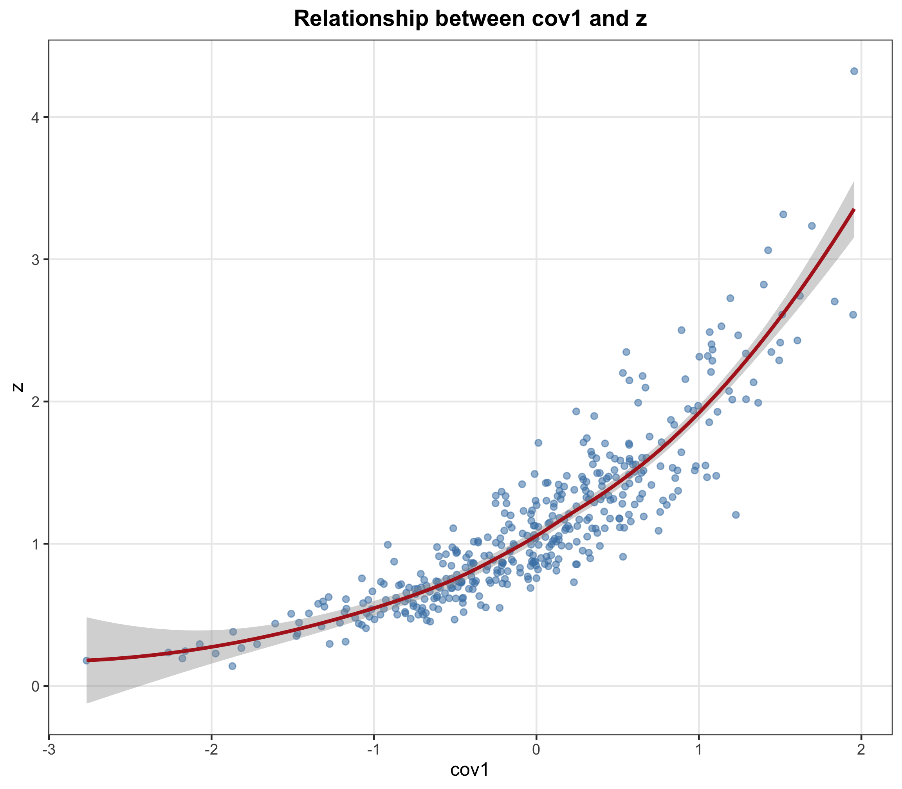
This combination of spatial structure, skewness, and nonlinearity is precisely where a random-forest trend and multi-scale singularity features may add useful information.
Engineer spatial features
Compute and interpret the singularity index
In two dimensions, an index near 2 indicates locally uniform behaviour; values below 2 indicate local enrichment or a positive anomaly; and values above 2 indicate local depletion. Because the simulated grid spacing is 1, this example uses scales from 1 to 5 grid units.
coords <- tutorial_data[c("x", "y")]
alpha_cov1 <- compute_singularity(
coords = coords,
values = tutorial_data$cov1,
scales = 1:5,
min_neighbours = 3,
min_scales = 2
)
summary(alpha_cov1)
sd(alpha_cov1)
# Mean: 2.039; SD: 0.2482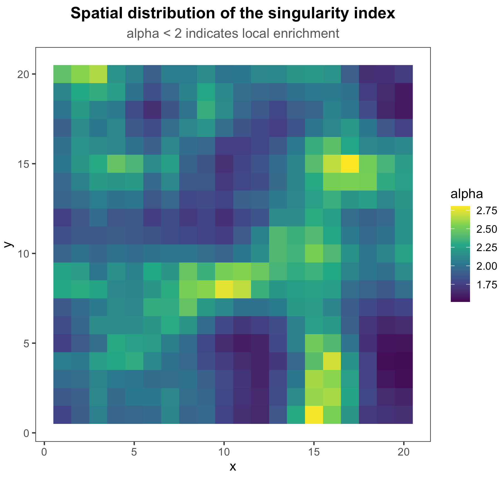
Whether a singularity feature enters the final trend model also depends on sd_threshold.
Features with very little variation are removed automatically so that near-constant inputs do not add
noise to the random forest.
Design a realistic test
Create a continuous spatial holdout
Hide the central 8 × 8 block from model fitting. The outer 336 locations become training samples and the central 64 locations form a contiguous, unsampled prediction area.
holdout_index <- with(
tutorial_data,
x >= 7 & x <= 14 & y >= 7 & y <= 14
)
train_data <- tutorial_data[!holdout_index, ]
test_data <- tutorial_data[holdout_index, ]
c(training = nrow(train_data), holdout = nrow(test_data))
# training holdout
# 336 64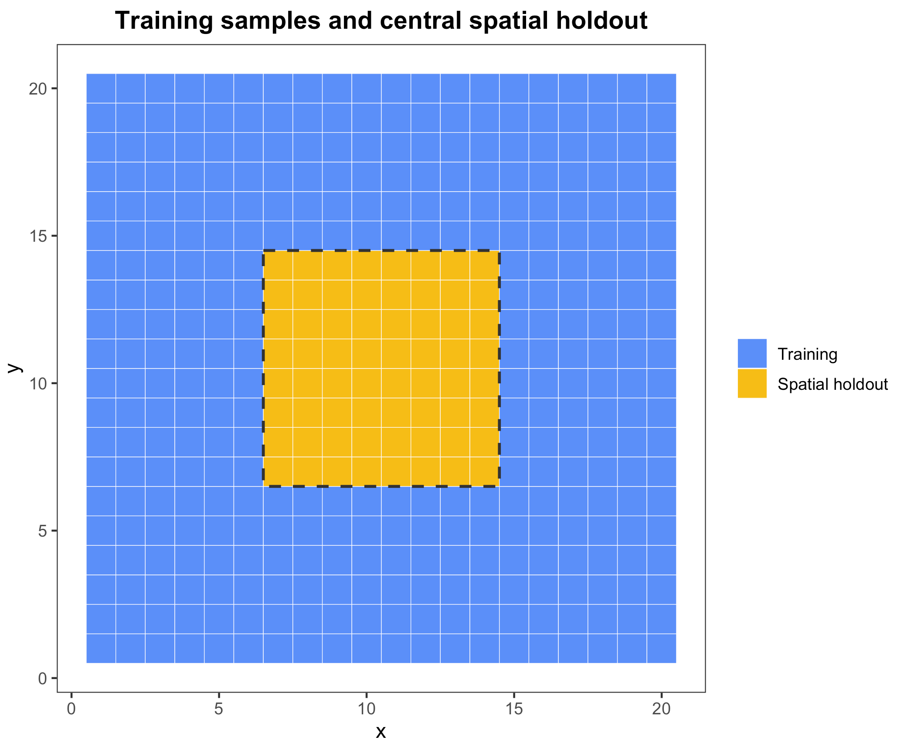
A contiguous holdout is closer to predicting an unsampled area than a random split, and it reduces the spatial leakage caused by placing neighbouring observations in both training and test sets.
Fit the model
Run singularity regression kriging
set.seed(42)
srk_model <- srk(
z ~ cov1,
data = train_data,
coords = ~x + y,
pred_data = test_data,
scales = 1:5,
ntree = 300,
sd_threshold = 0.10,
min_neighbours = 3,
min_scales = 2,
variogram_model = "auto"
)
print(srk_model)scales = 1:5Spatial scales used to compute singularity featuresntree = 300Number of trees in the random forestsd_threshold = 0.10Standard-deviation filter for singularity featuresvariogram_model = "auto"Automatic choice among spherical, exponential, and Gaussian modelssrk_model$retained_features
# [1] "sv_cov1"
unlist(srk_model$metrics)
# R2 RMSE MAE
# 0.95156 0.13402 0.09479
srk_model$variogram_model
# model psill range
# 1 Nug 0.011243 0.000
# 2 Exp 0.007597 2.562
sort(srk_model$feature_importance, decreasing = TRUE)
# cov1 sv_cov1
# 87.11 15.42These metrics describe the in-sample random-forest trend. Use the independent holdout and spatial block cross-validation results below for performance claims.
Diagnose the model
Inspect residuals, importance, fit, and the variogram
plot(srk_model, which = 1:4)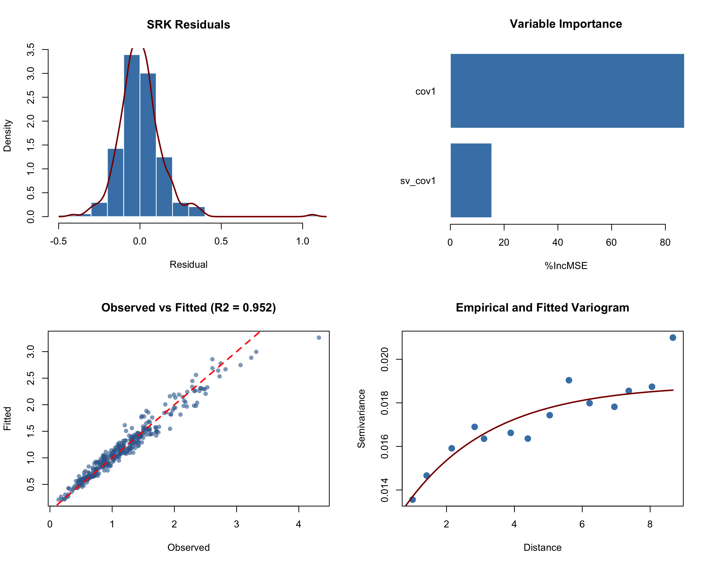
- Residuals should remain centred near zero without a strong systematic shift.
- Variable importance shows the contributions of raw and singularity features.
- Observed and fitted values should approach the 1:1 line.
- The variogram describes residual spatial dependence used by ordinary kriging.
Read the output
Separate the trend, kriged residual, and uncertainty
Because pred_data was supplied during fitting, the holdout predictions are already stored in
srk_model$predictions. The same result can be regenerated explicitly with
predict(srk_model, newdata = test_data).
| Column | Meaning |
|---|---|
x, y | Prediction-location coordinates |
prediction | Final SRK prediction |
trend | Random-forest trend prediction |
kriged_residual | Ordinary-kriging interpolation of the residual |
kriging_se | Standard error of residual kriging |
head(srk_model$predictions)
identity_error <- max(abs(
srk_model$predictions$prediction -
srk_model$predictions$trend -
srk_model$predictions$kriged_residual
))
identity_error
# [1] 1.041e-16
The near-zero identity error confirms the decomposition. Note that kriging_se captures
uncertainty in residual kriging only; it does not include uncertainty from the random-forest trend and
should not be presented as a complete prediction interval.
Map and validate
Evaluate the continuous holdout area
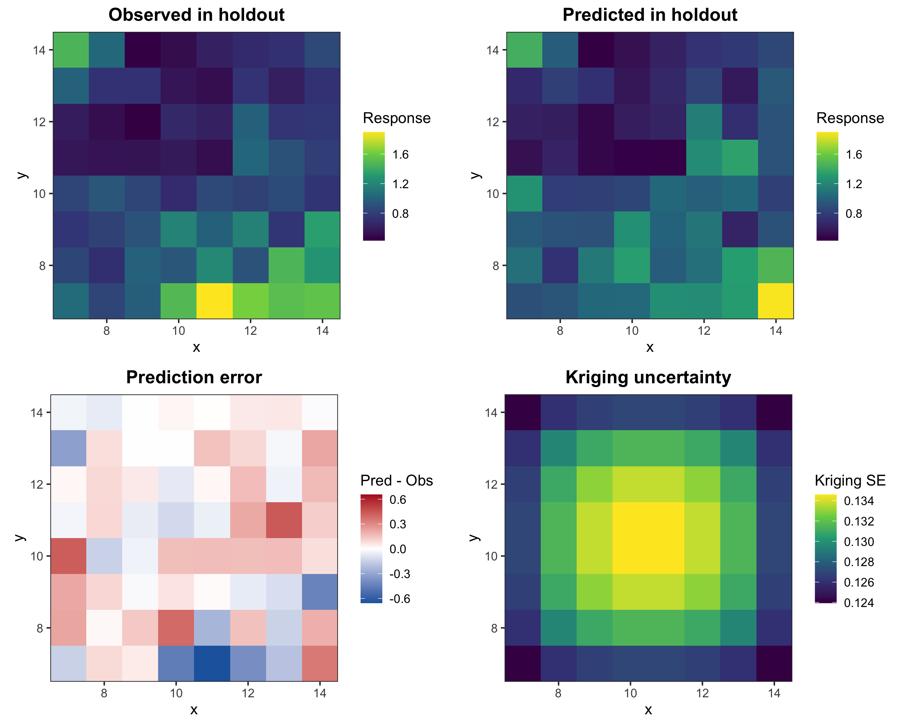
The observed and predicted panels share a colour scale. In the error panel, red indicates overprediction and blue indicates underprediction; the final panel shows the spatial pattern of kriging standard error.
observed <- test_data$z
predicted <- srk_model$predictions$prediction
holdout_metrics <- data.frame(
n = sum(complete.cases(observed, predicted)),
R2 = cor(observed, predicted, use = "complete.obs")^2,
RMSE = sqrt(mean((predicted - observed)^2, na.rm = TRUE)),
MAE = mean(abs(predicted - observed), na.rm = TRUE)
)
holdout_metrics
# n R2 RMSE MAE
# 1 64 0.6167 0.1968 0.1419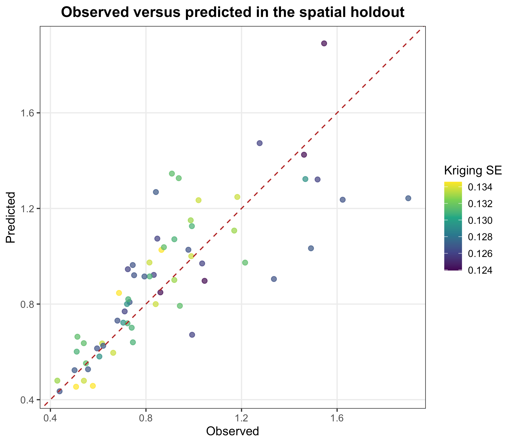
This test measures interpolation into a contiguous unsampled patch surrounded by training observations; it does not evaluate extrapolation beyond the study boundary.
Strengthen validation
Run five-fold spatial block cross-validation
A single holdout may depend on where it is placed. Spatial block cross-validation keeps neighbouring locations together and assigns entire blocks to folds, reducing optimistic leakage between train and test data.
set.seed(42)
cv_result <- srk_block_cv(
z ~ cov1,
data = tutorial_data,
coords = ~x + y,
nfold = 5,
block_size = 4,
scales = 1:5,
ntree = 200,
sd_threshold = 0.10
)
print(cv_result)
cv_result$fold_metrics
unlist(cv_result$overall_metrics)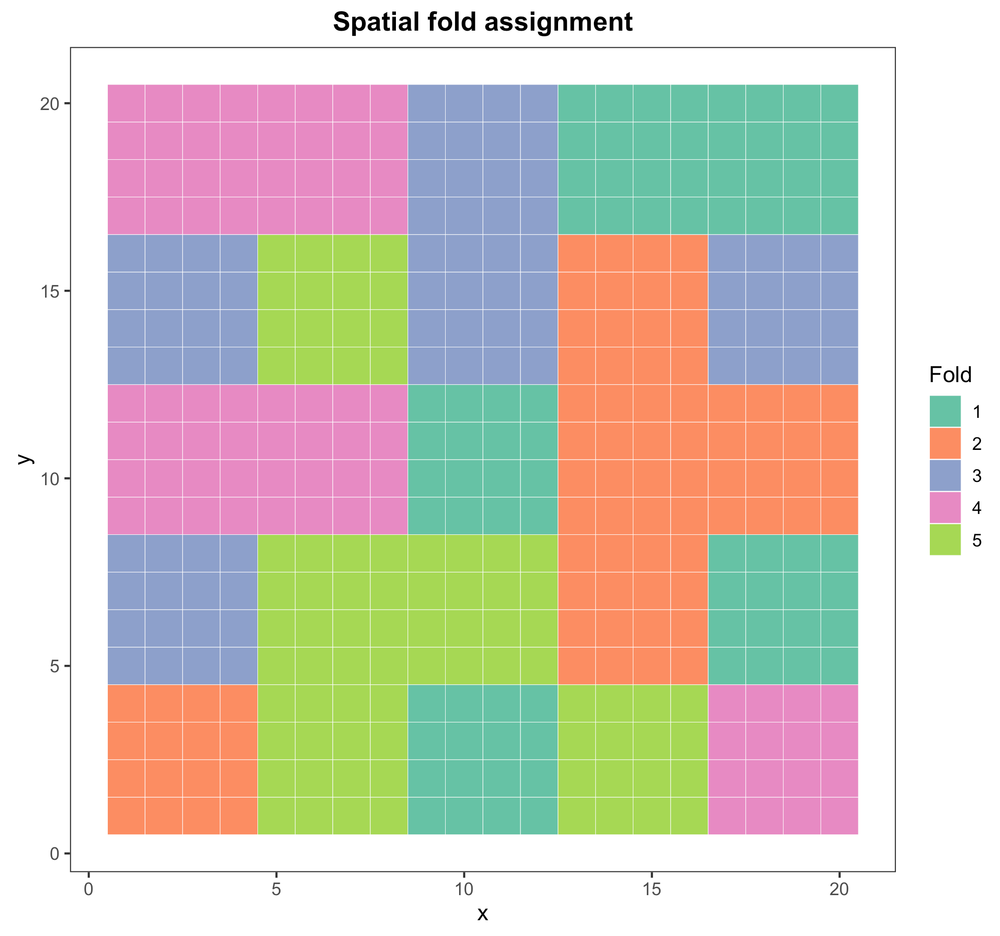
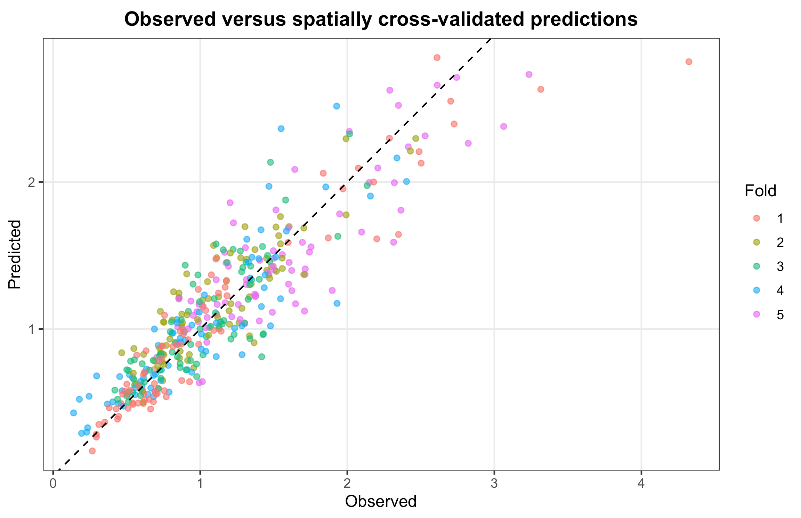
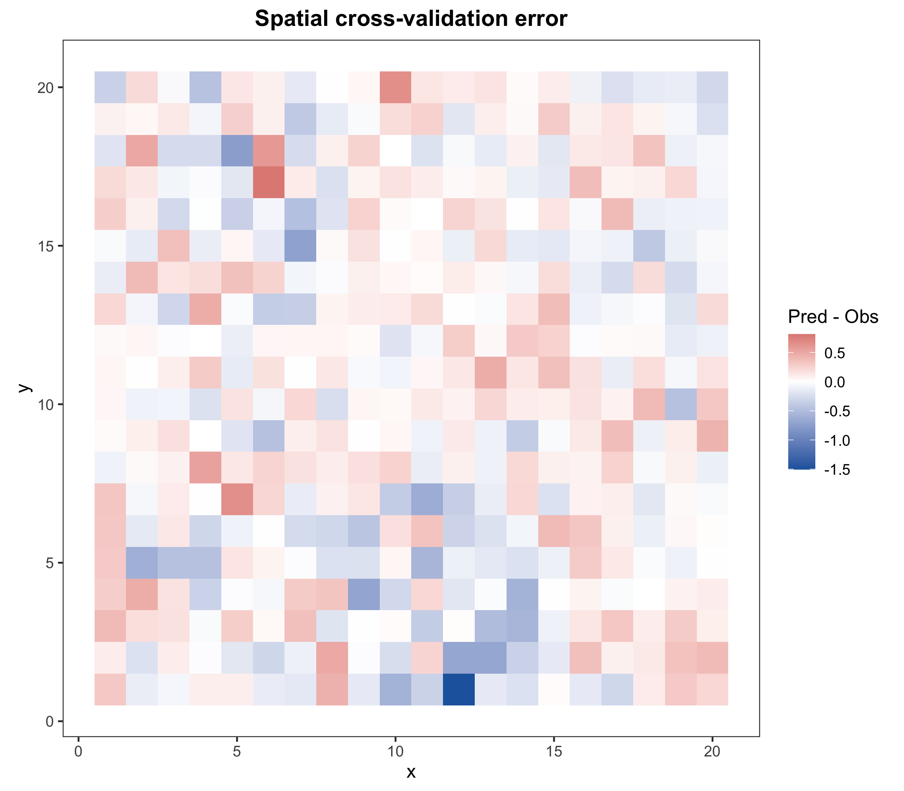
Inspect both per-fold and overall metrics. The fold map confirms that validation blocks are spatially coherent, while the error map reveals areas with persistent over- or underprediction.
Test robustness
Compare scales and screening thresholds
For a quick sensitivity experiment, use a smaller 12 × 12 dataset and compare nine combinations of maximum scale and singularity-feature threshold.
sensitivity_data <- sim_srk_data(
n_side = 12,
scenario = "skewed",
seed = 42
)
set.seed(42)
sensitivity_result <- srk_sensitivity(
z ~ cov1,
data = sensitivity_data,
coords = ~x + y,
scale_range = c(3, 5, 7),
threshold_range = c(0, 0.10, 0.30),
nfold = 3,
block_size = 4,
ntree = 100,
scale_step = 1
)
print(sensitivity_result)
par(mfrow = c(1, 3))
plot(sensitivity_result, metric = "R2")
plot(sensitivity_result, metric = "RMSE")
plot(sensitivity_result, metric = "MAE")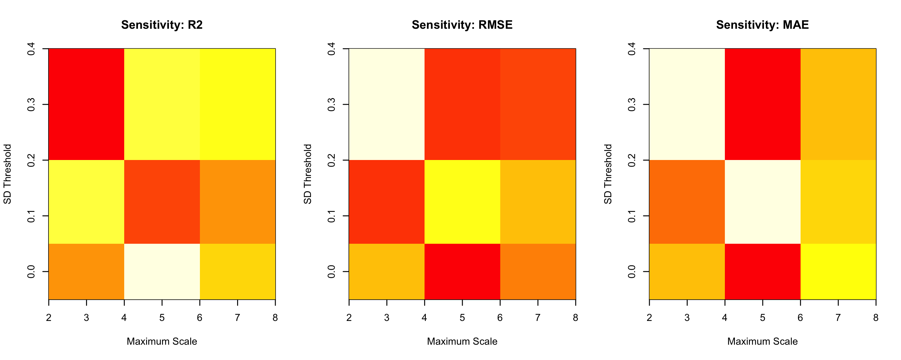
Do not select a setting from the single highest R² alone. Look for stable performance across neighbouring combinations and favour parameters that match the scientific process scale and computational budget.
The sensitivity function creates a new random spatial fold assignment for each parameter combination. For a formal comparison, predefine one fold scheme and reuse it across all settings.
Move to a real study
Adapt the workflow to your own files
In this template, the sample file contains target, projected coordinates, and three
environmental covariates. The prediction grid contains the same coordinate and covariate fields but no
target.
sample_data <- read.csv("sample_data.csv")
prediction_grid <- read.csv("prediction_grid.csv")
required_sample_columns <- c(
"target", "x", "y", "elevation", "slope", "covariate2"
)
required_grid_columns <- c(
"x", "y", "elevation", "slope", "covariate2"
)
stopifnot(all(required_sample_columns %in% names(sample_data)))
stopifnot(all(required_grid_columns %in% names(prediction_grid)))
set.seed(42)
my_model <- srk(
target ~ elevation + slope + covariate2,
data = sample_data,
coords = ~x + y,
pred_data = prediction_grid,
scales = seq(2000, 20000, 2000),
ntree = 500,
sd_threshold = 0.5,
min_neighbours = 3,
min_scales = 2,
variogram_model = "auto"
)
print(my_model)
summary(my_model)
head(my_model$predictions)
write.csv(
my_model$predictions,
"SingRegKrig_predictions.csv",
row.names = FALSE
)Final checks
Seven details that determine whether the result is credible
- Specify scales explicitly. Base them on sampling density, process scale, and coordinate units.
- Inspect retained features. An empty
retained_featuresobject means no singularity feature entered the trend model. - Separate fit from validation. Report spatial holdout or block-CV metrics, not only
model$metrics. - Fix the random seed. Random forests and spatial fold allocation both include random processes.
- Predict the complete grid together. Version 0.1.0 computes singularity from the training locations and the supplied
newdata; avoid arbitrary batches. - Interpret uncertainty precisely.
kriging_seis residual-kriging uncertainty, not a complete prediction interval. - Estimate the computational load. Test a subset before running multi-scale neighbourhood searches on very large grids.
Closing note
A concise interface still requires rigorous spatial reasoning
A successful function call is only the beginning. Credible SRK results depend on informative covariates, compatible coordinates and scales, retained singularity features, a defensible residual variogram, strict spatial validation, and careful uncertainty interpretation.
Run the simulated example first, then replace the response, coordinates, covariates, and grid with your own data.
Ren, K., Song, Y.*, Chen, M., & Yu, Q. (2026). “A singularity regression kriging for spatial prediction.” GIScience & Remote Sensing, 63(1), 2690341. https://doi.org/10.1080/15481603.2026.2690341